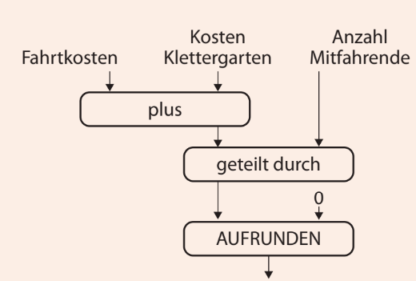
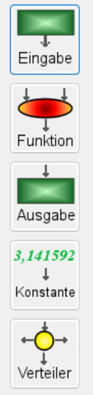
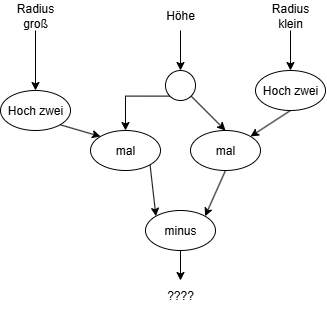
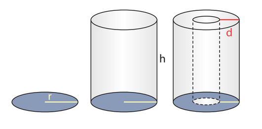
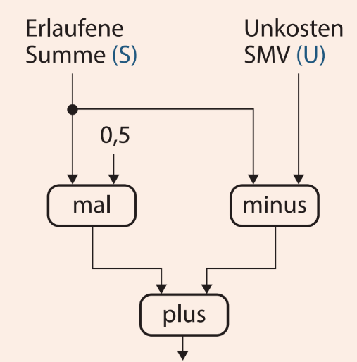
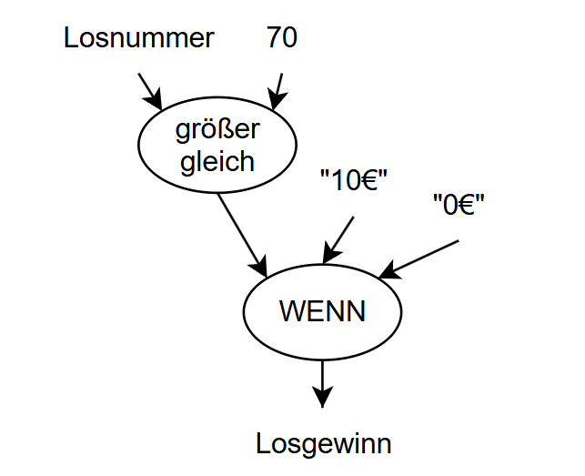

Tabellenkalkulation · Datenflussdiagramme
Aufgabe 5
Lies Datenflussdiagramme, zeichne sie selbst und finde Fehler darin.
- Beschreibe, was ein gegebenes Datenflussdiagramm berechnet.
- Zeichne selbst ein Datenflussdiagramm zu einer Rechensituation.
- Finde den Fehler in einem Datenflussdiagramm und korrigiere ihn.
Was rechnet dieses Diagramm?
Die Klasse 9b fährt in den Klettergarten. Notiere in einem Satz, welchen Betrag das Diagramm am Ende ausgibt, und öffne erst danach die Selbstkontrolle.

Selbstkontrolle anzeigen
Die Fahrtkosten und die Kosten für den Klettergarten werden addiert. Die Gesamtsumme wird durch die Anzahl der Mitfahrenden geteilt; so entsteht der Preis pro Kopf. Zum Schluss rundet AUFRUNDEN diesen Betrag auf. Die Konstante 0 gibt an, dass auf 0 Nachkommastellen, also auf ganze Euro, aufgerundet wird.
Bausteine eines Datenflussdiagramms
Jedes Datenflussdiagramm wird von oben nach unten gelesen: Die Pfeile zeigen, wie die Werte von den Eingaben durch die Funktionen bis zur Ausgabe fließen.

- Eingabe
- Ein Wert, den die nutzende Person eingibt, zum Beispiel die Anzahl der Mitfahrenden.
- Funktion
- Ein Rechen- oder Vergleichsschritt, zum Beispiel plus, mal oder größer. Eine Funktion hat mehrere Eingangspfeile, aber genau einen Ausgangspfeil.
- Ausgabe
- Das Ergebnis, das am Ende angezeigt wird.
- Konstante
- Ein fest eingetragener Wert, der nicht eingegeben wird, zum Beispiel die 0 beim Aufrunden.
- Verteiler
- Ein kleiner Kreis. Er gibt denselben Wert an mehrere Funktionen weiter.
Ob ein Funktionsbaustein als Ellipse oder als abgerundetes Rechteck gezeichnet wird, spielt keine Rolle. Wichtig sind die Beschriftung und die Richtung der Pfeile. Im Zeichenwerkzeug heißen die Funktionen teilweise anders: mal heißt dort *, geteilt durch heißt / und größer heißt >.
5a) Ein Datenflussdiagramm beschreiben
Beschreibe, was das Datenflussdiagramm berechnet. Nenne dabei die einzelnen Teilschritte und das Endergebnis.
Die Abbildung rechts zeigt, worum es geht: eine Kreisfläche, einen Zylinder und ein Rohr mit großem Außen- und kleinem Innenradius.


Hilfe 1
Lies das Diagramm von oben nach unten: Oben stehen die Eingaben, unten das Ergebnis.
Hilfe 2
Der kleine Kreis unter „Höhe“ ist ein Verteiler. Er schickt denselben Wert in beide Zweige. Beschreibe zuerst den rechten Zweig, dann den linken.
Hilfe 3
Rechts wird der kleine Radius quadriert und danach mit der Höhe multipliziert. Links geschieht dasselbe mit dem großen Radius. Was der Knoten „minus“ damit macht und was am Ende herauskommt, formulierst du selbst.
5b) Ein Datenflussdiagramm zeichnen
Jedes Jahr findet an Annas Schule ein Spendenlauf statt. Pro gelaufenem Kilometer sponsern Eltern und Verwandte einen Betrag; die Summe daraus heißt erlaufene Summe. Die SMV zieht davon ihre Unkosten für die Werbeplakate ab. Der Förderverein gibt am Ende noch einmal 50 % der erlaufenen Summe dazu.
Zeichne im Werkzeug ein Datenflussdiagramm, das die gespendete Gesamtsumme berechnet. Öffne die Selbstkontrolle erst, wenn du fertig bist.
Hilfe 1
Du brauchst zwei Eingaben: die erlaufene Summe und die Unkosten der SMV.
Hilfe 2
Die erlaufene Summe wird zweimal gebraucht: einmal für den Abzug der Unkosten und einmal für den Zuschuss des Fördervereins. Dafür gibt es den Verteiler.
Hilfe 3
Ein Zweig rechnet erlaufene Summe minus Unkosten. Der andere Zweig multipliziert die erlaufene Summe mit der Konstanten 0,5. Wie du beide Zweige zusammenführst, überlegst du selbst.
Doppelklicke einen Baustein, um ihn zu beschriften. Das Werkzeug speichert nichts – mache am Ende einen Screenshot oder übertrage das Diagramm in dein Heft.
Selbstkontrolle anzeigen
Die erlaufene Summe S geht in einen Verteiler. Der eine Zweig rechnet S minus die Unkosten U der SMV. Der andere Zweig rechnet S mal der Konstanten 0,5, also den Zuschuss des Fördervereins. Beide Ergebnisse fließen in „plus“. Ausgegeben wird die gespendete Gesamtsumme: S − U + 0,5 · S.

5c) Einen Fehler finden und korrigieren
Anna zieht ein Los. Wenn die Losnummer größer als 70 ist, erhält sie 10 € Gewinn. Bei jeder anderen Losnummer erhält sie 0 €.
Das abgebildete Datenflussdiagramm passt nicht zu diesem Text. Beschreibe den Fehler, seine Auswirkung bei der Losnummer 70 und die nötige Korrektur.

Hilfe 1
Vergleiche die Beschriftung des Vergleichsknotens Wort für Wort mit dem Text der Aufgabe.
Hilfe 2
Setze für die Losnummer den Wert 70 ein. Was liefert das Diagramm, und was müsste laut Text herauskommen?
Hilfe 3
„größer gleich“ schließt die 70 mit ein, „größer als 70“ nicht. Welche Beschriftung stattdessen im Knoten stehen muss, schreibst du selbst auf.
Korrigiertes Diagramm zeichnen
Zeichne das korrigierte Datenflussdiagramm im Werkzeug nach.
Doppelklicke einen Baustein, um ihn zu beschriften. Das Werkzeug speichert nichts – mache am Ende einen Screenshot oder übertrage das Diagramm in dein Heft.
Selbstkontrolle anzeigen
Nur ein Baustein ändert sich: Der Vergleichsknoten muss „größer“ heißen, im Werkzeug also >. Alles andere bleibt gleich: die Eingabe Losnummer, die Konstante 70, die WENN-Funktion mit „10€“ und „0€“ sowie die Ausgabe Losgewinn.
Merke
- Ein Datenflussdiagramm zeigt, wie Werte von den Eingaben durch Funktionen bis zur Ausgabe fließen. Die Pfeile geben die Richtung des Datenflusses an.
- Ein Verteiler gibt denselben Wert an mehrere Funktionen weiter. Eine Konstante ist ein fest eingetragener Wert, der nicht eingegeben wird.
- Jede Funktion entspricht einem Teilschritt einer Formel. Die WENN-Funktion hat drei Eingänge: Bedingung, Ausgabe wenn wahr, Ausgabe wenn falsch.
- Bei Vergleichen entscheidet der Grenzfall: „größer als 70“ schließt die 70 aus, „größer gleich 70“ schließt sie ein.